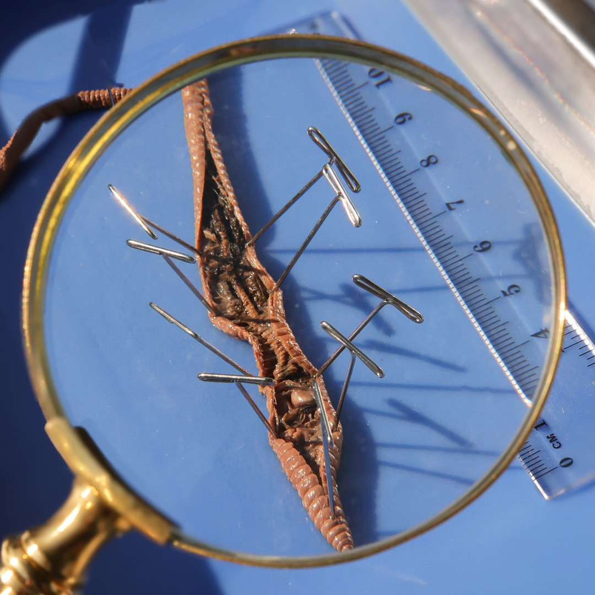

Set the tone for the walk and introduce the topic before beginning the walk. This should take between 5–10 minutes — nothing longer than the attention spans of the kids.
Opening Duaa
Start with a duaa for protection from harm and evil. The duaa can be led by either the walk leader or a child who has the duaa memorized.
“Such is He who knows all that is unseen as well as what is seen, the Almighty, the Merciful, who gave everything its perfect form. He first created man from clay.”
Surah As-Sajdah 32:6–7
Human beings are an incredibly complex creation, full of many intricacies and miraculous engineering — a perfected form as described in this ayah. This ayah also reminds us of our humble beginnings: clay, a mixture of dirt and water. Clay and mud may appear to be inert substances, but even in its raw form, Allah has made mud a haven for many lifeforms. In the world that exists somewhere between earth and water lies an incredible diversity of life: fungi, moss, lichen, decomposers — all of which quietly and invisibly move along the cycle of life.
This is information to share with the kids. What you share and the level of detail will depend on the ages of the kids in your pod. Use your discretion.
So far, we have watched water fall from the sky, rush down the Trinity River, and carve through solid rock. But what happens when water simply lands on the dirt and stays there? It makes MUD! Today, we are going to look closely at something most people just wipe off their shoes, and we will discover that mud is actually a secret, bustling city full of life! Did you know that North Texas sits right on top of the Blackland Prairie? This means our rich, dark clay soil is the absolute perfect recipe for mud! Unlike sandy dirt that lets water drain away quickly, our heavy clay holds onto rain like a giant sponge. Because it stays wet so long, our local microhabitats are incredibly productive. After a good rainstorm, the dirt along the Trinity River and our local Dallas creek trails completely wakes up, transforming into some of the most bustling, biologically active “mud cities” in the entire region!
So what exactly is mud made of?
Mud is what happens when solid earth and liquid water mix together. But mud is rarely empty — it is a giant ecosystem!
The Recipe for Mud: Soil isn’t just ground-up rock. Healthy dirt is packed with dead leaves, crushed-up bugs, air, and minerals. When water soaks into this mix, it turns into mud.
The Decomposers (Nature’s Recycling Crew): Mud is the perfect, wet home for billions of tiny creatures. Earthworms, roly-polys (pillbugs), and microscopic bacteria chew up dead plants and turn them into rich, healthy soil. Without these muddy recyclers, new plants wouldn’t have the food they need to grow!
A Safe Hideout: For many animals, mud is a superpower. Frogs burrow into mud to stay warm during the winter. Elephants roll in it to use it as sunscreen and bug spray! Right here in Texas, crawdaddies (also called mudbugs) dig deep into the muddy banks to build safe underground hideouts, stacking the leftover mud into perfect little chimneys at the surface!
How big is this habitat?
When we think of habitats, we usually think of giant places like the ocean or a huge forest. But mud is a perfect example of a microhabitat — a small, distinct environment with its own special conditions that supports a very specific community of living things. A mud puddle might look small to us, but to the creatures living inside, it is an entire universe! This universe is created by a very specific recipe: Water + Clay + Silt + Organic Matter (dead leaves and plants). When these four things mix together, they create one of the most productive microhabitats on Planet Earth.
What lives inside this microhabitat?
Let’s meet the amazing citizens of this muddy metropolis (pictures for presenting in the walk are in this printable):
1. The Cleanup Crew (Decomposers) — Every city needs a garbage and recycling crew, and the mud has the best in the world!
Meet the decomposers: earthworms, pill bugs (roly-polys), millipedes, microscopic nematodes (tiny worms), and bacteria.
Their job is incredible: they eat dead matter — like fallen leaves and rotting wood — and convert it back into living nutrients. They are the reason the soil is healthy enough to grow our food!
2. The Fantastic Fungi — Did you know mushrooms aren’t plants? They actually belong to their very own kingdom of life! Fungi don’t have roots or seeds.
Underneath the mud, fungi grow a massive, invisible web of tiny white threads called mycelium.
This mycelium acts like the “underground internet” of the forest. The fungi use this network to feed, decompose dead matter, and even communicate with plant roots to share water and nutrients!
3. The Brave Pioneers: Moss and Lichen — If you look at the wet rocks near a muddy puddle, you might see fuzzy green moss or crusty, colorful lichen.
These are called pioneer plants. Just like pioneers who explore new lands, moss and lichen are the very first living things to colonize completely bare rocks or wet, empty soil.
Unlike ordinary plants, they don’t need deep soil to grow. They bravely settle on the hard rock, slowly breaking it down to help create the very first layers of new dirt for other plants to use later.
The Divine Design: Transformation, Not the End
When we look at rotting leaves, fungi, or pill bugs chewing on dead wood, it is easy to think of “decay” and “decomposition” as sad things or endings. But Allah (SWT) designed it to be a beautiful transformation. Nothing in Allah’s creation is ever wasted. The dead leaves falling into the mud are not an ending; they are the ingredients for new life. The decomposers turn them into the soil that will grow next spring’s beautiful flowers.
Now that we are all up to speed on this week’s topic, let’s start walking! The following are some conversations and activities to do as you walk. This should take about 30–60 minutes — again, nothing longer than the stamina of the kids.
The Most Beautiful of Names
Introduce the name of Allah and its basic meaning as you start your walk. Encourage the kids to reflect on the name throughout the walk, as well as mentioning it whenever relevant.
الْبَصِيرُ
Al-Baseer
The All-Seeing
There is so much more to mud than initially meets the eye — that which can be seen with some digging (like insects), that which we can only see parts of (like fungi, moss, and lichen), and that which cannot be seen with the naked eye (like microbes). Not to mention that which is yet to be discovered, and no human has ever laid eyes on! Our power of sight is an incredible blessing, but it is also limited. We know there is so much that exists around us, but we cannot see it. Allah is Al-Baseer, the All-Seeing. His ability to see has no limitations; He sees all that we see and all that is hidden from us. Nothing is hidden from Him, even in the darkest of nights or deepest of depths.
Here are some observation prompts to help the kids tune into their environment and engage all of their senses.
For Kids 1–4
Make or find a puddle of mud and describe what you can see in it.
How does mud feel on your fingers? Your skin?
How does mud feel when you draw with it?
What does mud smell like? Do you like the smell, or is it icky?
For Kids 5–8
Did you know your sense of smell bypasses your brain and goes straight to memory! What smells make you think of mud?
The smell of wet mud is called PETRICHOR, and it’s due to a bacteria.
Press some mud gently between your fingertips — does it feel smooth, gritty, or rocky? Make a small worm made of mud!
For Kids 9–12
Use a magnifying glass to look at some life in mud. Can you spot any tunnels, casts, or trails?
Mud can make sounds like squelch, pop, and gurgle! This is acoustic evidence of air pockets made by organisms below. Bring your ear close to the ground — what do you hear?
Phew, that was a good walk! Let’s pause and apply what we have learned and reflect on what we have observed.
Stories for Blooming Hearts
Share a story from our tradition that ties to this week’s topic. Note that creating an engaging storytelling experience is on the storyteller; these are just the basic details. A story told from the heart will reach hearts!
Allah’s Creation of Adam from Mud
Allah SWT had created angels from light who could only obey Allah, jinn from fire who had free choice, and the earth filled with different types of creation.
Amongst these creations was a jinn who became so pious that he was raised to the ranks of the angels.
One day, Allah SWT created a new creation. He took dirt from all the different parts of the earth and mixed it with water, making it into clay. Allah SWT shaped that clay into the form of the first human, Adam AS, and then blew a soul into him.
When Allah SWT introduced him to the angels, they knew of the type of corruption on earth the other creation with choice — the jinn — had already made, so they asked Allah if this new creation would be able to do the same as well.
Allah SWT affirmed that this new creation from mud would have choice as well, but that He made them to be Khulafa Al-Ardh, Caretakers of the Earth. Allah SWT told the angels that He knows that which they do not, and this reassured them because they have full trust in Allah.
He taught Adam AS and humankind things that no other creation knew before.
The jinn who was raised to the rank of angels started to become jealous of this new creation.
Allah SWT commanded the angels to bow to Adam AS, out of respect. All of them bowed down but the jinn — he refused. He exclaimed that he was better than this creation made out of dirt, since he, the jinn, was made of fire.
Allah SWT removed him from his position, and this jinn made it his mission to be the downfall of humanity. This jinn was Iblis, who became the leader of all Shayateen.
His arrogance, pride, and jealousy led him to lose his position in jannah and to be of those who will live and take others to Hell with him.
Takeaways
This story teaches us to be humble since we are all made of dirt.
Allah can honor anyone through giving them knowledge and the ability to be close to Him. Where we come from does not make us better than anyone else.
We may underestimate something like mud, but Allah SWT can use it for great honor.
Like the angels, we may not understand the plan of Allah, but we should put our trust in Him because He knows that which we do not.
Simple field ID card for common invertebrates (printable)
Materials to collect from nature
A rotting log or large rock to lift, damp leaf litter, mud near a creek edge
Activity
Find a rotting log or a wet patch of leaf litter near the trail.
Carefully lift and look underneath. Count every living thing you see — note its color, how many legs it has (or if it has none), and how it moves.
Look for white fuzzy threads on the underside of the log — this is mycelium, the body of a fungus.
Try to name the role of each creature you find: is it a decomposer? A predator? Just passing through?
Sketch your favorite creature in your journal.
Put the log back exactly as you found it. It’s their home.
Discussion
How many different creatures did you find? Did they all look like they belonged together, or did it feel like a whole neighborhood under there?
Why do you think so many things live under a log specifically? What does the log give them?
The mycelium threads you saw are actually the main body of the fungus — the mushroom is just the fruit. Does that change how you think about fungi?
We put the log back because it’s their home. What does that tell us about how we should move through nature?
There are many microscopic things in the mud that you cannot see, but Allah, Al-Baseer, can. Knowing He sees everything, how does that make you feel or change the way you act?
Pick a 1-meter patch of moist ground, mud, or leaf litter near the trail edge. Mark its rough boundaries with a few sticks.
Spend 5–10 minutes documenting every organism you can find in your patch: plants, fungi, invertebrates, any animal signs (tracks, holes, frass). Inspect things closely with your magnifying glass.
In your journal, draw a simple food web: arrows showing who eats what in your patch. Include at least one producer, one decomposer, and one predator.
Producer — a living thing that makes its own food from sunlight (moss, algae, small plants)
Decomposer — a living thing that breaks down dead matter and returns nutrients to the soil (fungi, worms, bacteria)
Predator — a living thing that hunts and eats other animals (beetles, centipedes, spiders)
Discussion
What was the most abundant organism in your patch? What does that tell you about this habitat?
Did anything surprise you — something you expected to find but didn’t, or something you didn’t expect at all?
Look at your food web: if you removed one organism, which removal would cause the most damage to the whole system? Why?
What would happen to your patch if all the fungi disappeared?
Allah designed every creature in your patch with a specific role. Which role do you think is the most important, and does it match what humans typically pay attention to?
After completing the activity is a good time to stop for a snack. Power their brains and bodies with something nutritious! Bonus points for avoiding single-use plastics and being good Khulafa. Be sure to leave the area as you found it, or better, following the good manners taught to us by our Prophet ﷺ.
Now that this week’s walk is just about done, let’s wrap it up.
Tadabbur Among the Trees
Here are some prompts to help wrap up the walk. These prompts can be used to spark a conversation or to fill up your nature journal for today!
For Kids 1–4
What are blessings we have because of mud?
What does Al-Baseer see in the mud?
For Kids 5–8
Look at a patch of mud near you — draw what you might find if you were to dig into it.
Imagine you can communicate the way fungi do! Who would you communicate with? What would you say?
For Kids 9–12
Imagine all the secret life in mud and its microscopic scale. Using the measurements from the printable in the Addendum, can you draw some of the life that may live under the earth?
Need more nature? We got you! Here are some additional resources to further enrich your understanding and reflection. These additional resources can be utilized by the pod, by individual families, or a combination of both — whatever best fits your needs!
Prophetic Wisdom
Find an opportunity to share the wisdom of our Prophet ﷺ as you walk.
“A cloud came and it rained till the roof started leaking — and in those days the roof used to be made of the branches of date-palms. The iqama was pronounced and I saw Allah’s Messenger (ﷺ) prostrating in water and mud, and even I saw the mark of mud on his forehead.”
Narrated by Abu Sa‘eed Al-Khudri — Sahih Al-Bukhari 699
This hadith gives us insight into the humble home and masjid the Prophet ﷺ had. Rain and mud did not stop him from salah, nor from making sujood in it. This also teaches us that mud is clean and pure — having mud on us does not mean we are unclean for salah. The Prophet ﷺ must have loved salah so much that rain and making sujood in mud was not a deterrent for him. How do you think it would feel? Would you try it?
Those Who Set the Ranks (37:11)فَاسْتَفْتِهِمْ أَهُمْ أَشَدُّ خَلْقًا أَم مَّنْ خَلَقْنَا ۚ إِنَّا خَلَقْنَاهُم مِّن طِينٍ لَّازِبٍ
“So [Prophet], ask the disbelievers: is it harder to create them than other beings We have created? We created them from sticky clay.”
This is a line of questioning to humble those who think too highly of themselves: you started off as sticky clay, and it was Allah that transformed that into who you are today. Remember your humble origins, remember your Creator.
“People, [remember,] if you doubt the Resurrection, that We created you from dust, then a drop of fluid, then a clinging form, then a lump of flesh, both shaped and unshaped: We mean to make Our power clear to you. Whatever We choose We cause to remain in the womb for an appointed time, then We bring you forth as infants and then you grow and reach maturity. Some die young and some are left to live on to such an age that they forget all they once knew. You sometimes see the earth lifeless, yet when We send down water it stirs and swells and produces every kind of joyous growth.”
In this ayah, Allah depicts for us the distinct stages that every human life has gone through in order to become a fully fledged human. Our complex bodies started off from nothing, and will return to nothing, only to be brought back on Judgement Day by the One who initially gave them life — so how can anyone doubt Allah’s power to resurrect us once more!
“We know very well what the earth takes away from them: We keep a comprehensive record.”
When we die, our bodies are put into the earth. Our physical bodies decompose, partly through the organisms we learned about today. Allah knows exactly what was taken by which organism; the decomposition of every cell is in a record.
“You who believe, do not cancel out your charitable deeds with reminders and hurtful words, like someone who spends his wealth only to be seen by people, not believing in Allah and the Last Day. Such a person is like a rock with earth on it: heavy rain falls and leaves it completely bare. Such people get no rewards for their works: Allah does not guide the disbelievers.”
A person who donates money in order to show off has a shallow veneer of goodness, just as a rock covered in moss may give the impression of greenery and life. However, just as moss can be easily wiped away, the false appearance of goodness on a hypocrite can be exposed just as easily!
A flow of movements to get kids’ energy out at the beginning, or help them calm down at the end of the walk.
1
Begin seated by closing your eyes and thinking of Allah who knows the seen and the unseen. Extend your legs out in front of you. Imagine you are gradually melting into the mud… feel the earth holding the underside of your body. Gently begin rocking side to side; you can also place your hands behind your knees and do a rocking motion with your feet off the ground.
2
Slow down and reach both arms up. Imagine reaching out for the sun shining down on the earth. Now bring both arms down, crouch forward and down on all fours like a cat!
3
Slowly bring your chest down to the ground, imagine sinking into the mud below you! How many life forms live underneath! Take an inhale and exhale closer to the ground and push your chest away from the ground with an inhale.
4
Extend both of your legs stepping back into a plank. Make sure hands are firm into the ground, all fingers spread apart. Think of the strong earth holding everything together, by the will of Allah!
5
Holding the pose, try to sink your body slowly lower down, imagine being inside the mud layers and meeting different creatures like worms and decomposers! Hello!
6
Now push your chest away from the earth, extending both arms, bending your back, like a worm peeking up from the soil.
7
Bring your head back to center and push your hips back and up. Like a bent tree, with branches on the ground.
8
Pedal feet slowly, tap opposite hand to knee (crossing midline) on opposite side, with slow deep breaths. Now gradually crawl with both hands back towards your feet, like an inchworm backing up. Imagine the worms that wiggle through tunnels. Once your hands reach your ankles, bring your hips down to a seated position. Bring palms on your knees, close your eyes and with slow breaths, think of the deep underground, where everything is quiet… roots resting, worms still, the soil calm and full of life. SubhanAllah, Allah is the Lord of the seen and the unseen!
Here are more activities to try, whether as a group with your pod or individually at home.
Sediment Jars: What Is Mud Composed Of?
Mud looks like one thing. This jar will show you many things.
Materials to bring from home
Clear jar or plastic bottle (one per family)
Lid
Masking tape and permanent marker to label layers
Materials to collect from nature
A good scoop of mud from the trail (creek bank mud is ideal; the wetter and messier the better)
Water (from the creek or bring a water bottle)
Activity
Pack your jar about halfway with mud. Try to scoop from a few inches deep, not just the surface.
Fill the rest with water, leaving a small gap at the top.
Seal the jar and shake hard for 30 seconds until everything is fully mixed and murky.
Set it somewhere flat and still. Don’t touch it.
Before anything settles, make a prediction in your journal: how many layers do you think will form?
Watch for 5–10 minutes and record what you notice. What’s moving? What’s sinking? What’s still floating?
Once layers have formed, use tape to mark and label each one.
Discussion
How many layers formed? What do you think each one is made of?
The layer at the bottom is coarse sand and gravel — heavy, drops fast. The middle layer is silt. The top of the settled material is fine clay. Anything still floating is organic matter — tiny bits of leaf, root, and living organisms. That organic layer is what makes mud alive rather than just wet dirt.
Creek bank mud, pond bottom mud, and open trail mud all have different ratios of these ingredients. Which kind do you think has the most organic matter? Which would have the most clay?
The creatures we found today — worms, pill bugs, fungal threads — which layer of your jar do you think they actually live in, and why?
Allah designed mud not as one substance but as a layered community of materials, each with a different role. Does that change how you think about what we were digging through today?
This activity is done at home after the walk. Reference video: Earthworm Dissection

Materials to bring from home
1–2 live earthworms (collected from your yard after rain, or purchased from a bait shop)
Rubbing alcohol (70%)
Small container with lid
Dissection tray or foam board (a styrofoam food tray works)
Pins or thumbtacks
Small scissors or a craft knife (adult use)
Hand lens or magnifying glass
Printed earthworm anatomy diagram
Pencil and journal for sketching
Activity
Place the worm in a small container with a few drops of rubbing alcohol for 5–10 minutes to sedate it. It will stop moving but remain alive.
Place the sedated worm dorsal side up (the darker side) on your foam board and pin it gently at the head and tail ends to hold it in place.
Using small scissors, make a shallow cut along the dorsal midline from the clitellum (the thick band) toward the head. Take your time — you are only cutting through the body wall, not digging deep.
Pin back the body wall on each side to expose the interior.
Using your diagram, identify and locate as many structures as you can: the clitellum, the five pairs of hearts (aortic arches), the digestive tract running the full length of the body, and the segmentation of the coelom.
Sketch what you see and label it. Compare your sketch to the printed diagram — what matches? What surprised you?
When finished, wrap the worm carefully and dispose of it respectfully. Wash hands thoroughly.
Discussion
The worm has five pairs of hearts. What does that tell you about how important circulation is to an organism that lives in soil?
Every system you found — digestive, circulatory, muscular — is doing real work in the mud we walked through today. How does seeing the inside change how you think about what a worm actually does?
Allah created this level of complexity in something most people step over without a second thought. What does that mean about the things we haven’t looked at closely yet?